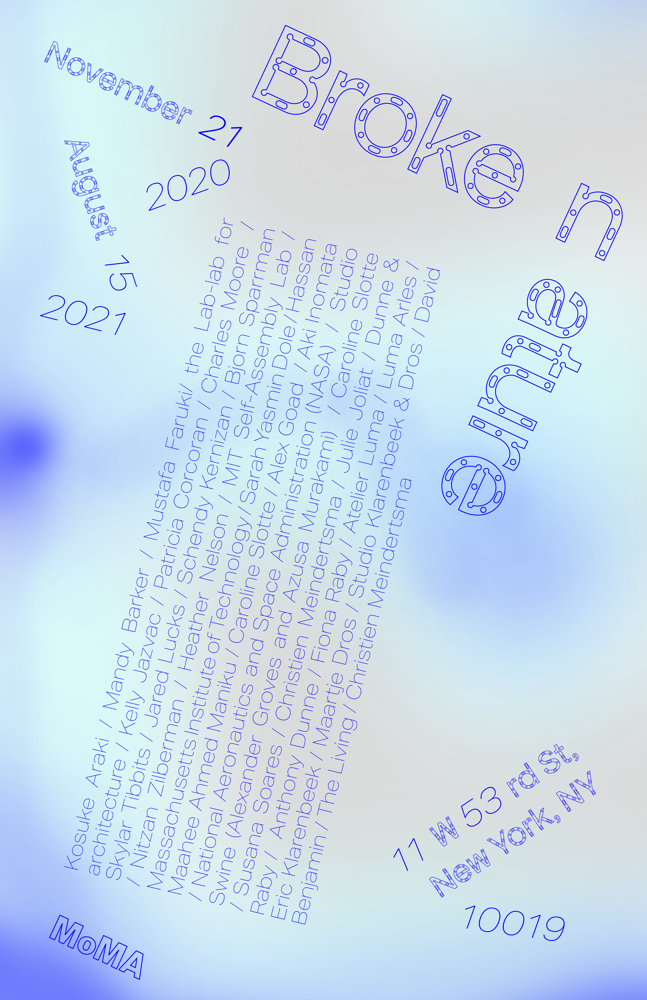

For my Flexible formats project, I created an identity for the Broken Nature exhibit @ the MoMA useing a mechanical human made typeface and a thermal nature like background which represents the concept of the exhibition as humanity’s contribution to creating positive change in nature
